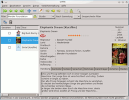
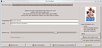
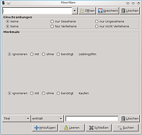
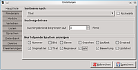

Griffith
Dieser Artikel wurde für die folgenden Ubuntu-Versionen getestet:
Ubuntu 14.04 Trusty Tahr
Zum Verständnis dieses Artikels sind folgende Seiten hilfreich:
|  |
| Hauptfenster |
Griffith  ist ein Programm zur Verwaltung der eigenen Filmdatensammlung geschrieben in Python. Dabei kann das Programm auf Internetdatenbanken wie die von OFDb , IMDb
ist ein Programm zur Verwaltung der eigenen Filmdatensammlung geschrieben in Python. Dabei kann das Programm auf Internetdatenbanken wie die von OFDb , IMDb  oder Amazon sowie etlichen anderen zugreifen, um diese Daten in einer eigenen Datenbank zu speichern.
oder Amazon sowie etlichen anderen zugreifen, um diese Daten in einer eigenen Datenbank zu speichern.
Standardmäßig verwendet Griffith hierfür SQLite, es kann aber auch mit PostgreSQL, MySQL und Microsoft SQL umgehen. Über verschiedene Filter kann dann die eigene Datenbank nach einem passenden Film durchsucht werden. Die verschiedenen Funktionen des Programms sind meist selbsterklärend. Daher ist es durchaus intuitiv zu bedienen. Griffith hat auch eine Exportfunktion, mit deren Hilfe die Datenbank in verschiedenen Formaten exportiert werden kann, darunter PDF, CSV, GCstar und noch einige mehr.
Des Weiteren stellt Griffith eine Verleihverwaltung bereit. Das Programm ist neben Linux auch für Windows und Mac OS X erhältlich.
Hinweis:
Seit 2011 ruht die Weiterentwicklung des Programms.
Installation¶
Folgendes Paket muss installiert werden [1]:
griffith (universe)
 mit apturl
mit apturl
Paketliste zum Kopieren:
sudo apt-get install griffith
sudo aptitude install griffith
Bedienung¶
Titel hinzufügen¶

Um der Datenbank einen neuen Titel hinzu zu fügen, muss man im Hauptfenster in der Werkzeugleiste auf das blaue Plus klicken. Alternativ kann man auch über "Bearbeiten -> Hinzufügen" gehen. Hier gibt man entweder den Originaltitel oder den deutschen Titel an. Nach einem Klick auf "Aus dem Netz holen" wird die voreingestellte Internetfilmdatenbank nach möglichen Treffern durchsucht. Ist Griffith fündig geworden, werden die entsprechenden Felder ausgefüllt. Es kann sinnvoll sein, auf dem Reiter "Details" noch zusätzliche oder subjektiv zutreffendere Genre hinzu zu schreiben.
Hinweis:
Beim Durchsuchen der Internetfilmdatenbanken sowie der eigenen Datenbank muss man darauf achten, dass die Titel in folgender Form angegeben werden: Name, Artikel.
Filter erstellen¶

Damit man auch bei einer umfassenden Filmsammlung schnell fündig wird, gibt es die Möglichkeit, diese anhand der üblichen Kriterien wie zum Beispiel Titel, Genre oder Darsteller zu durchsuchen. Es besteht aber auch die Möglichkeit, eigene Filter zu erstellen, um zum Beispiel alle Filme anzuzeigen, die dem Genre Komödie zugeordnet sind. Diese Ergebnisse lassen sich wiederum mit den voreingestellten Filtern durchsuchen, so dass man schließlich alle Komödien mit z.B. Brad Pitt präsentiert bekommt.
Um einen Filter anzulegen, klickt man auf das Lupen- bzw. Fernglassymbol in der Werkzeugleiste oder geht über "Extras -> Suchfenster öffnen". Ganz oben gibt man den Namen ein, unter dem der Filter abgespeichert und aufgerufen werden soll. Ganz unten kann man wieder die bereits erwähnten Kategorien wählen, die Bedingungen und das Schlüsselwort angeben. Dabei lassen sich auch weitere Bedingungen hinzufügen. Abschließend muss man nur noch auf "Speichern" klicken und schon kann man im Hauptfenster im Dropdown-Menü neben "Gespeicherte Filter" darauf zugreifen.
Filmsammlung exportieren¶
Die gesamte Filmsammlung kann exportiert werden, indem man im Menü unter "Datei -> Exportieren" aus den neun verschiedenen Exportmöglichkeiten die passende auswählt. Zu finden ist hier neben den eingangs erwähnten Formaten auch HTML. Die Besonderheit dabei ist, dass man hier entscheiden kann, welche Daten genau exportiert werden sollen. Auch der iPod wird von Griffith unterstützt.
Konfiguration¶
 Die Einstellungen erreicht man über "Extras -> Einstellungen". Hier öffnet sich ein Fenster mit verschiedenen Reitern. Für kleinere Filmsammlungen und einen ersten Blick dürften die Grundeinstellungen genügen. Außerdem sind die Einstellungsmöglichkeiten meist selbsterklärend. Daher werden hier nur einige Reiter kurz beschrieben.
Datenbank¶
Möchte man statt SQLite eine andere Datenbank verwenden, so sind hier die entsprechenden Einstellungen vorzunehmen. Damit Griffith MySQL als Datenbank nutzen kann, muss am MySQL-Server ein eigener Benutzer für Griffith angelegt werden. Dafür muss man sich am MySQL-Server anmelden und dann folgende Befehle ausführen, wobei "strenggeheim" durch ein sicheres Passwort zu ersetzen ist:
mysql> CREATE DATABASE `griffith` DEFAULT CHARACTER SET utf8 COLLATE utf8_general_ci; mysql> CREATE USER 'griffith'@'localhost' IDENTIFIED BY 'strenggeheim'; mysql> CREATE USER 'griffith'@'%' IDENTIFIED BY 'strenggeheim'; mysql> GRANT ALL ON `griffith` . * TO 'griffith'@'localhost'; mysql> GRANT ALL ON `griffith` . * TO 'griffith'@'%';
Den neuen Benutzer trägt man nun inklusive Passwort ein. Auch die anderen unterstützten Datenbanken werden hier eingerichtet.
Weitere Einstellungsmöglichkeiten¶
| Reiter | Beschreibung |
| "Hauptliste" | Die Sortierreihenfolge und die anzuzeigenden Spalten werden auf diesem Reiter den eigenen Vorstellungen angepasst. |
| "Module" | Möchte man auf eine andere Internetfilmdatenbank als die voreingestellte zugreifen und bestimmen, welche Informationen über die Filme geholt werden, so sind hier die entsprechenden Änderungen vorzunehmen. |
| "Diverse" | Hier kann man einen anderen PDF-Betrachter auswählen und die Einstellungen die Schrift und Rechtschreibprüfung betreffend ändern. |
 Programmübersicht
Programmübersicht- Erstellt mit Inyoka
-
 2004 – 2017 ubuntuusers.de • Einige Rechte vorbehalten
2004 – 2017 ubuntuusers.de • Einige Rechte vorbehalten
Lizenz • Kontakt • Datenschutz • Impressum • Serverstatus -
Serverhousing gespendet von